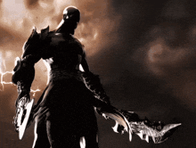
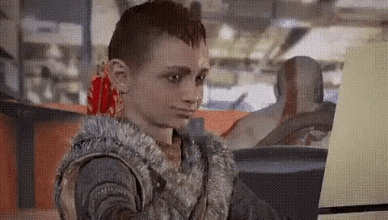
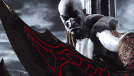
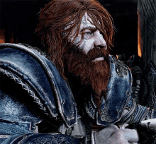
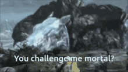
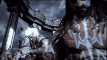
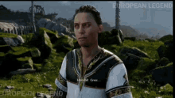
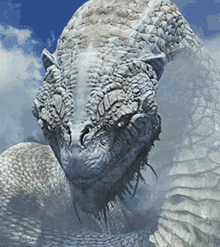

Kratos
Guerreiro espartano marcado pela vingança. Busca redenção enquanto enfrenta deuses e o próprio passado.

Guerreiro espartano marcado pela vingança. Busca redenção enquanto enfrenta deuses e o próprio passado.

Filho de Kratos e conhecido como Loki. É inteligente, curioso e essencial para a jornada do pai.

Rei dos deuses do Olimpo e pai de Kratos. Seu poder e orgulho desencadeiam grandes conflitos.

Deus nórdico do trovão e portador do Mjölnir. É um guerreiro temido por sua força devastadora.

Deus dos mares na mitologia grega. Controla os oceanos e luta contra Kratos no Olimpo.

Mensageiro dos deuses e dono de grande velocidade. É ágil, arrogante e difícil de alcançar.

Guardião de Asgard capaz de prever intenções. Sua confiança excessiva o torna um adversário perigoso.

Serpente gigante ligada ao destino nórdico. É uma criatura acestral com forte conexão a Atreus.